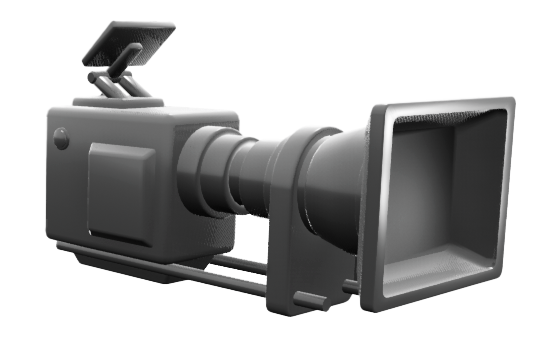

Cameras
{kind=link}
Description
Cameras in the Open Worlds are used for observing the workspace from different views and capturing image data. Cameras are considered “actors”. The camera library controls the camera actors.
A camera must be initialized first by spawning the camera in the location (or attached to the parent actor of choice) in order to use it.
See the Camera Tutorial to get a better understanding of using cameras in Quanser Interactive Labs.
Camera Library
Constants
- QLabsFreeCamera.ID_FREE_CAMERA = 170
Class ID
Member Variables
- QLabsFreeCamera.actorNumber = None
The current actor number of this class to be addressed. This will be set by spawn methods and cleared by destroy methods. It will not be modified by the destroy all actors. This can be manually altered at any time to use one object to address multiple actors.
Methods
- QLabsFreeCamera.__init__(qlabs, verbose=False)[source]
Constructor Method
- Parameters
qlabs (object) – A QuanserInteractiveLabs object
verbose (boolean) – (Optional) Print error information to the console.
- QLabsFreeCamera.spawn(location=[0, 0, 0], rotation=[0, 0, 0], scale=[1, 1, 1], configuration=0, waitForConfirmation=True)
Spawns a new actor with the next available actor number within this class.
- Parameters
location (float array[3]) – (Optional) An array of floats for x, y and z coordinates
rotation (float array[3]) – (Optional) An array of floats for the roll, pitch, and yaw in radians
scale (float array[3]) – (Optional) An array of floats for the scale in the x, y, and z directions. Scale values of 0.0 should not be used.
configuration (uint32) – (Optional) Spawn configuration. See class library for configuration options.
waitForConfirmation (boolean) – (Optional) Make this operation blocking until confirmation of the spawn has occurred. Note that if this is False, the returned actor number will be invalid.
- Returns
status - 0 if successful, 1 class not available, 3 unknown error, -1 communications error.
actorNumber - An actor number to use for future references.
- Return type
int32, int32
Tip
Scale will not affect the camera, but will affect attached children.
- QLabsFreeCamera.spawn_degrees(location=[0, 0, 0], rotation=[0, 0, 0], scale=[1, 1, 1], configuration=0, waitForConfirmation=True)
Spawns a new actor with the next available actor number within this class.
- Parameters
location (float array[3]) – (Optional) An array of floats for x, y and z coordinates
rotation (float array[3]) – (Optional) An array of floats for the roll, pitch, and yaw in degrees
scale (float array[3]) – (Optional) An array of floats for the scale in the x, y, and z directions. Scale values of 0.0 should not be used.
configuration (uint32) – (Optional) Spawn configuration. See class library for configuration options.
waitForConfirmation (boolean) – (Optional) Make this operation blocking until confirmation of the spawn has occurred. Note that if this is False, the returned actor number will be invalid.
- Returns
status - 0 if successful, 1 class not available, 3 unknown error, -1 communications error.
actorNumber - An actor number to use for future references.
- Return type
int32, int32
Tip
Scale will not affect the camera, but will affect attached children.
- QLabsFreeCamera.spawn_id(actorNumber, location=[0, 0, 0], rotation=[0, 0, 0], scale=[1, 1, 1], configuration=0, waitForConfirmation=True)
Spawns a new actor.
- Parameters
actorNumber (uint32) – User defined unique identifier for the class actor in QLabs
location (float array[3]) – (Optional) An array of floats for x, y and z coordinates
rotation (float array[3]) – (Optional) An array of floats for the roll, pitch, and yaw in radians
scale (float array[3]) – (Optional) An array of floats for the scale in the x, y, and z directions. Scale values of 0.0 should not be used.
configuration (uint32) – (Optional) Spawn configuration. See class library for configuration options.
waitForConfirmation (boolean) – (Optional) Make this operation blocking until confirmation of the spawn has occurred.
- Returns
status - 0 if successful, 1 class not available, 2 actor number not available or already in use, 3 unknown error, -1 communications error
- Return type
int32
Tip
Scale will not affect the camera, but will affect attached children.
- QLabsFreeCamera.spawn_id_degrees(actorNumber, location=[0, 0, 0], rotation=[0, 0, 0], scale=[1, 1, 1], configuration=0, waitForConfirmation=True)
Spawns a new actor.
- Parameters
actorNumber (uint32) – User defined unique identifier for the class actor in QLabs
location (float array[3]) – (Optional) An array of floats for x, y and z coordinates
rotation (float array[3]) – (Optional) An array of floats for the roll, pitch, and yaw in radians
scale (float array[3]) – (Optional) An array of floats for the scale in the x, y, and z directions. Scale values of 0.0 should not be used.
configuration (uint32) – (Optional) Spawn configuration. See class library for configuration options.
waitForConfirmation (boolean) – (Optional) Make this operation blocking until confirmation of the spawn has occurred.
- Returns
status - 0 if successful, 1 class not available, 2 actor number not available or already in use, 3 unknown error, -1 communications error
- Return type
int32
Tip
Scale will not affect the camera, but will affect attached children.
- QLabsFreeCamera.spawn_id_and_parent_with_relative_transform(actorNumber, location=[0, 0, 0], rotation=[0, 0, 0], scale=[1, 1, 1], configuration=0, parentClassID=0, parentActorNumber=0, parentComponent=0, waitForConfirmation=True)
Spawns a new actor relative to an existing actor and creates a kinematic relationship.
- Parameters
actorNumber (uint32) – User defined unique identifier for the class actor in QLabs
location (float array[3]) – (Optional) An array of floats for x, y and z coordinates
rotation (float array[3]) – (Optional) An array of floats for the roll, pitch, and yaw in radians
scale (float array[3]) – (Optional) An array of floats for the scale in the x, y, and z directions. Scale values of 0.0 should not be used.
configuration (uint32) – (Optional) Spawn configuration. See class library for configuration options.
parentClassID (uint32) – See the ID variables in the respective library classes for the class identifier
parentActorNumber (uint32) – User defined unique identifier for the class actor in QLabs
parentComponent (uint32) – 0 for the origin of the parent actor, see the parent class for additional reference frame options
waitForConfirmation (boolean) – (Optional) Make this operation blocking until confirmation of the spawn has occurred.
- Returns
status - 0 if successful, 1 class not available, 2 actor number not available or already in use, 3 cannot find the parent actor, 4 unknown error, -1 communications error
- Return type
int32
- QLabsFreeCamera.spawn_id_and_parent_with_relative_transform_degrees(actorNumber, location=[0, 0, 0], rotation=[0, 0, 0], scale=[1, 1, 1], configuration=0, parentClassID=0, parentActorNumber=0, parentComponent=0, waitForConfirmation=True)
Spawns a new actor relative to an existing actor and creates a kinematic relationship.
- Parameters
actorNumber (uint32) – User defined unique identifier for the class actor in QLabs
location (float array[3]) – (Optional) An array of floats for x, y and z coordinates
rotation (float array[3]) – (Optional) An array of floats for the roll, pitch, and yaw in degrees
scale (float array[3]) – (Optional) An array of floats for the scale in the x, y, and z directions. Scale values of 0.0 should not be used.
configuration (uint32) – (Optional) Spawn configuration. See class library for configuration options.
parentClassID (uint32) – See the ID variables in the respective library classes for the class identifier
parentActorNumber (uint32) – User defined unique identifier for the class actor in QLabs
parentComponent (uint32) – 0 for the origin of the parent actor, see the parent class for additional reference frame options
waitForConfirmation (boolean) – (Optional) Make this operation blocking until confirmation of the spawn has occurred.
- Returns
status - 0 if successful, 1 class not available, 2 actor number not available or already in use, 3 cannot find the parent actor, 4 unknown error, -1 communications error
- Return type
int32
- QLabsFreeCamera.possess()[source]
Possess (take control of) a camera in QLabs.
- Returns
True if possessing the camera was successful, False otherwise
- Return type
boolean
- QLabsFreeCamera.set_camera_properties(fieldOfView, depthOfField, aperature, focusDistance)[source]
Sets the camera properties. When depthOfField is enabled, the camera will produce more realistic (and cinematic) results by adding some blur to the view at distances closer and further away from a given focal distance. For more blur, use a large aperture (small value) and a narrow field of view.
- Parameters
fieldOfView (int) – The field of view that the camera can see (range:5-150 degrees). When depthOfField is True, smaller values will increase focal blur at distances relative to the focusDistance.
depthOfField (boolean) – Enable or disable the depth of field visual effect
aperture (float) – The amount of light allowed into the camera sensor (range:2.0-22.0). Smaller values (larger apertures) increase the light and decrease the depth of field. This parameter is only active when depthOfField is True.
focusDistance (float) – The distance to the focal plane of the camera. (range:0.1-50.0 meters). This parameter is only active when depthOfField is True.
- Returns
True if setting the camera properties was successful, False otherwise
- Return type
boolean
- QLabsFreeCamera.set_transform(location, rotation)[source]
Change the location and rotation of a spawned camera in radians
- Parameters
location (array[3]) – An array of floats for x, y and z coordinates
rotation (array[3]) – An array of floats for the roll, pitch, yaw in radians
- Returns
True if spawn was successful, False otherwise
- Return type
boolean
- QLabsFreeCamera.set_transform_degrees(location, rotation)[source]
Change the location and rotation of a spawned camera in degrees
- Parameters
location (array[3]) – An array of floats for x, y and z coordinates
rotation (array[3]) – An array of floats for the roll, pitch, yaw in degrees
- Returns
True if spawn was successful, False otherwise
- Return type
boolean
- QLabsFreeCamera.destroy()
Find and destroy a specific actor. This is a blocking operation.
- Returns
numActorsDestroyed - The number of actors destroyed. -1 if failed.
- Return type
int32
- QLabsFreeCamera.destroy_all_actors_of_class()
Find and destroy all actors of this class. This is a blocking operation.
- Returns
numActorsDestroyed - The number of actors destroyed. -1 if failed.
- Return type
int32
- QLabsFreeCamera.ping()
Checks if the actor is still present in the environment. Note that if you did not spawn the actor with one of the spawn functions, you may need to manually set the actorNumber member variable.
- Returns
status - True if successful, False otherwise
- Return type
boolean
- QLabsFreeCamera.get_world_transform()
Get the location, rotation, and scale in world coordinates of the actor.
- Returns
status - True if successful, False otherwise
location
rotation
scale
- Return type
boolean, float array[3], float array[3], float array[3]
- QLabsFreeCamera.get_world_transform_degrees()
Get the location, rotation, and scale in world coordinates of the actor.
- Returns
status - True if successful, False otherwise
location
rotation
scale
- Return type
boolean, float array[3], float array[3], float array[3]
- QLabsFreeCamera.set_image_capture_resolution(width=640, height=480)[source]
Change the default width and height of image resolution for capture
- Parameters
width (uint32) – Must be an even number. Default 640
height (uint32) – Must be an even number. Default 480
- Returns
True if spawn was successful, False otherwise
- Return type
boolean
- QLabsFreeCamera.get_image()[source]
Request an image from the camera actor. Note, set_image_capture_resolution must be set once per camera otherwise this method will fail.
- Returns
Success, RGB image data
- Return type
boolean, byte array[variable]
- QLabsFreeCamera.parent_with_relative_transform(location=[0, 0, 0], rotation=[0, 0, 0], scale=[1, 1, 1], parentClassID=0, parentActorNumber=0, parentComponent=0, waitForConfirmation=True)
Parents one existing actor to another to create a kinematic relationship.
- Parameters
location (float array[3]) – (Optional) An array of floats for x, y and z coordinates
rotation (float array[3]) – (Optional) An array of floats for the roll, pitch, and yaw in radians
scale (float array[3]) – (Optional) An array of floats for the scale in the x, y, and z directions. Scale values of 0.0 should not be used.
parentClassID (uint32) – See the ID variables in the respective library classes for the class identifier
parentActorNumber (uint32) – User defined unique identifier for the class actor in QLabs
parentComponent (uint32) – 0 for the origin of the parent actor, see the parent class for additional reference frame options
waitForConfirmation (boolean) – (Optional) Make this operation blocking until confirmation of the spawn has occurred.
- Returns
status - 0 if successful, 1 cannot find this actor, 2 cannot find the parent actor, 3 unknown error, -1 communications error
- Return type
int32
- QLabsFreeCamera.parent_with_relative_transform_degrees(location=[0, 0, 0], rotation=[0, 0, 0], scale=[1, 1, 1], parentClassID=0, parentActorNumber=0, parentComponent=0, waitForConfirmation=True)
Parents one existing actor to another to create a kinematic relationship.
- Parameters
location (float array[3]) – (Optional) An array of floats for x, y and z coordinates
rotation (float array[3]) – (Optional) An array of floats for the roll, pitch, and yaw in degrees
scale (float array[3]) – (Optional) An array of floats for the scale in the x, y, and z directions. Scale values of 0.0 should not be used.
parentClassID (uint32) – See the ID variables in the respective library classes for the class identifier
parentActorNumber (uint32) – User defined unique identifier for the class actor in QLabs
parentComponent (uint32) – 0 for the origin of the parent actor, see the parent class for additional reference frame options
waitForConfirmation (boolean) – (Optional) Make this operation blocking until confirmation of the spawn has occurred.
- Returns
status - 0 if successful, 1 cannot find this actor, 2 cannot find the parent actor, 3 unknown error, -1 communications error
- Return type
int32
- QLabsFreeCamera.parent_with_current_world_transform(parentClassID=0, parentActorNumber=0, parentComponent=0, waitForConfirmation=True)
Parents one existing actor to another to create a kinematic relationship while preserving the current world transform of the child actor.
- Parameters
parentClassID (uint32) – See the ID variables in the respective library classes for the class identifier
parentActorNumber (uint32) – User defined unique identifier for the class actor in QLabs
parentComponent (uint32) – 0 for the origin of the parent actor, see the parent class for additional reference frame options
waitForConfirmation (boolean) – (Optional) Make this operation blocking until confirmation of the spawn has occurred.
- Returns
status - 0 if successful, 1 cannot find this actor, 2 cannot find the parent actor, 3 unknown error, -1 communications error
- Return type
int32
- QLabsFreeCamera.parent_break(waitForConfirmation=True)
Breaks any relationship with a parent actor (if it exists) and preserves the current world transform
- Parameters
waitForConfirmation (boolean) – (Optional) Make this operation blocking until confirmation of the spawn has occurred.
- Returns
status - 0 if successful, 1 cannot find this actor, -1 communications error
- Return type
int32
Configurations
There are no configuration options for the camera actor.
Connection Points
There are no connection points for the free camera actor.
Camera Tutorial
Example
1"""
2Free Camera Library Example
3---------------------------
4
5.. note:: Make sure you have Quanser Interactive Labs open before running any of these examples.
6
7.. tip:: If you are struggling to get this example running check out our _Troubleshooting page.
8
9"""
10# imports to important libraries
11import sys
12import time
13sys.path.append('../libraries/')
14
15from library_qlabs import QuanserInteractiveLabs
16from library_qlabs_free_camera import QLabsFreeCamera
17
18
19def main():
20
21 # creates a server connection with Quanser Interactive Labs and manages
22 # the communications
23 qlabs = QuanserInteractiveLabs()
24 qlabs.destroy_all_spawned_actors()
25
26 # initialize our desired variables
27 # note that you can use the coordinate helper to pick locations for your camera.
28 location = [-53.022, -7.491, 14.475]
29 rotation = [-0, 0.261, 0.683]
30
31 # not sure if this is needed
32 print("Connecting to QLabs...")
33 qlabs.open("localhost")
34
35 # destroy any spawned actors in the world
36 qlabs.destroy_all_spawned_actors()
37
38 # create a camera in this qlabs instance
39 camera = QLabsFreeCamera(qlabs)
40
41 # add a custom camera at a specified location and rotation using radians
42 camera.spawn(location=location, rotation=rotation)
43
44 # to switch our view from our current camera to the new camera we just initialized
45 camera.possess()
46
47 #time wait to demonstrate the difference between the default camera settings
48 # and after we've set the camera properties
49 time.sleep(3)
50
51 # set the properties of our camera to customize it - this is not required
52 # default camera is set to a FOV: 90 degrees with DOF disabled
53 # (which disables aperature and focal distance)
54 camera.set_camera_properties(fieldOfView=40, depthOfField=True, aperature=2.3,
55 focusDistance=0.6)
56
57 # collect the current world transform information from the actor camera (should be
58 # the same as the one we set).
59 x, loc, rot, scale = camera.get_world_transform()
60 print(x, loc, rot, scale)
61
62 # ping the existing camera -- we will expect this to return "True", since the camera
63 # does indeed exist.
64 camera.ping()
65
66 # set the image resolution height and width - here we are just setting them to be
67 # the default 640x480
68 camera.set_image_capture_resolution()
69
70 # request an image from the camera
71 camera.get_image()
72
73 qlabs.close()
74
75if __name__ == "__main__":
76 main()
Tip
There is a few easy steps to initializing a new camera in an environment using the interface as well as the code:
Pick a Location for your camera using the Coordinate Helper (Determining Locations) section.
Copy the location and rotation desired.
Use spawn or spawn_degrees to initialize a new camera. Paste the copied location and rotation into their respective places.